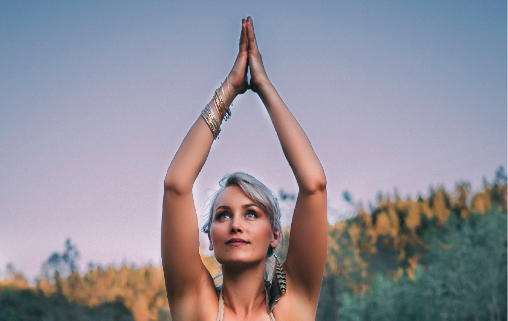
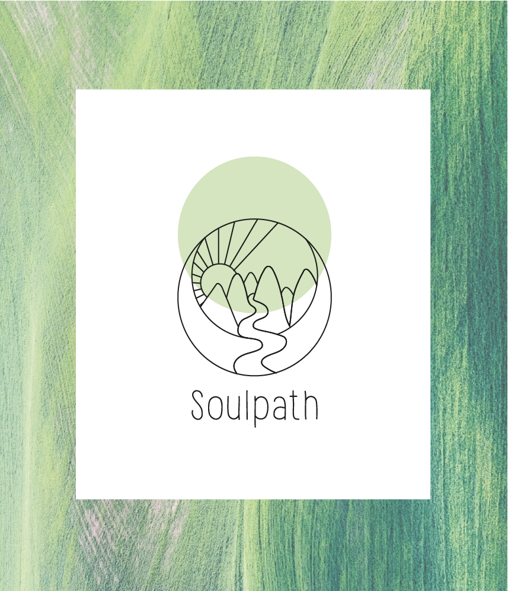
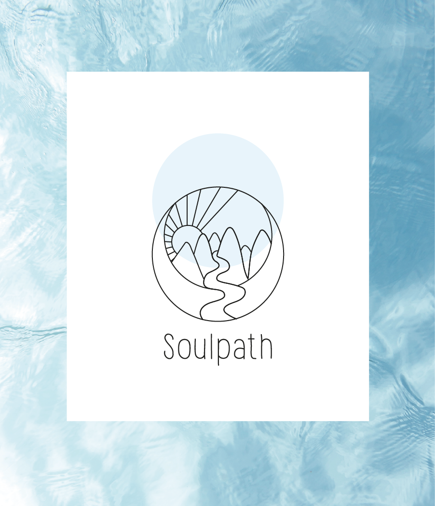
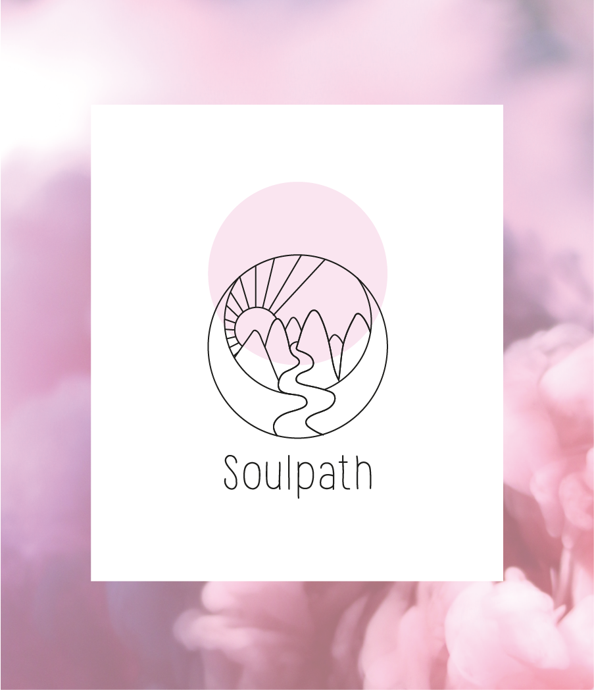
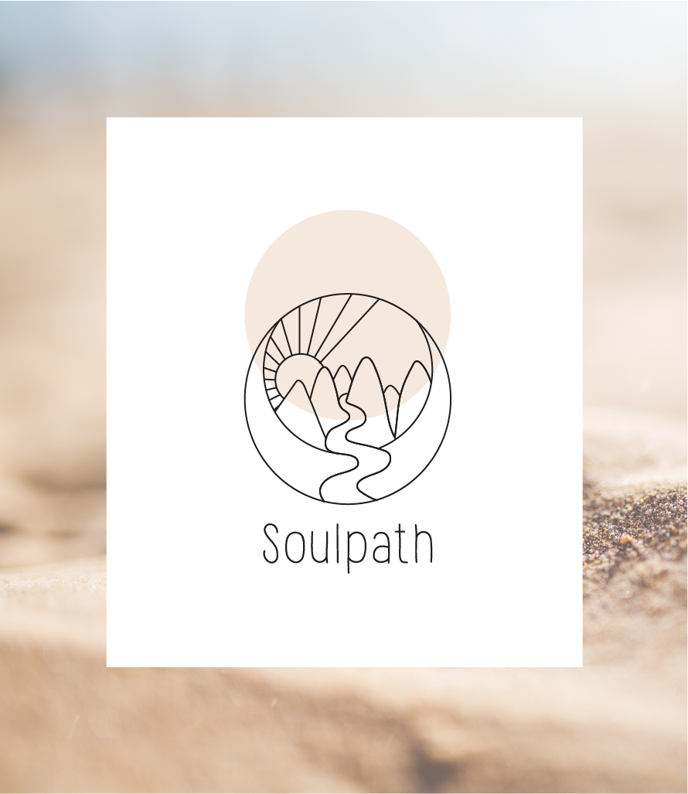
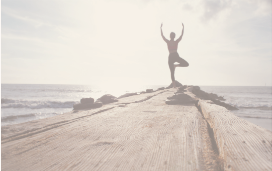
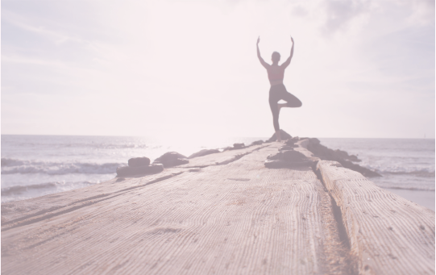
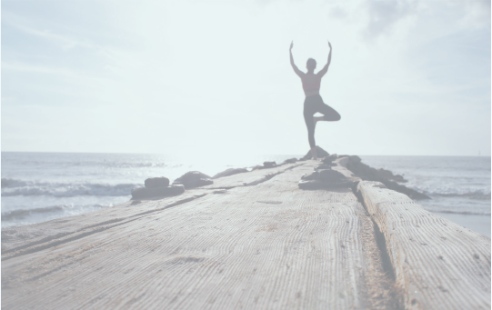
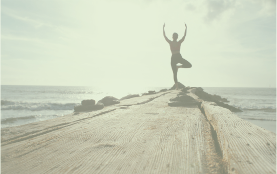

De kleurvarianten van het logo zijn afkomstig van onderstaande texturen. Deze liggen aan de basis van de ganse huisstijl, en stralen elk een bepaalde sfeer uit.
|  |  |  |  |
Fotomateriaal dient van hoge resolutie te zijn en liefst met hoge contrasten. Op onderstaande websites valt er oneindig veel mooi, gratis en kwalitatief beeldmateriaal te verzamelen:
www.pexels.com
www.unsplash.com
Voor willekeurige natuurfoto’s is deze fotograaf aan te raden: www.pexels.com/@eberhardgross
Hieronder enkele voorbeelden van geschikt beeldmateriaal:
Om de activiteiten goed te illustreren worden ook actiefoto’s gebruikt, genomen door Soulpath zelf of door deelnemers van de evenementen. Deze zijn vaak van minder goeie kwaliteit, dus worden ze ook kleiner afgebeeld en weinig gebruikt voor veeleisend drukwerk en dergelijke.
Hieronder enkele voorbeelden:
Beeldmateriaal wordt zelden gebruikt zonder overlay. Men gaat een transparante kleurlaag over de afbeelding leggen, zodat het beeld zachter wordt. Dit kan een witte laag zijn of in een Soulpath kleur. De graad van transparantie is afhankelijk van de foto en de toepassing.
|  |  |  |  |